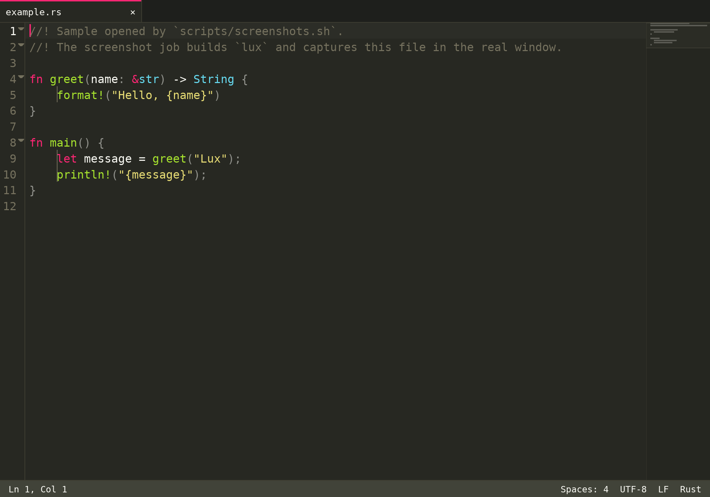
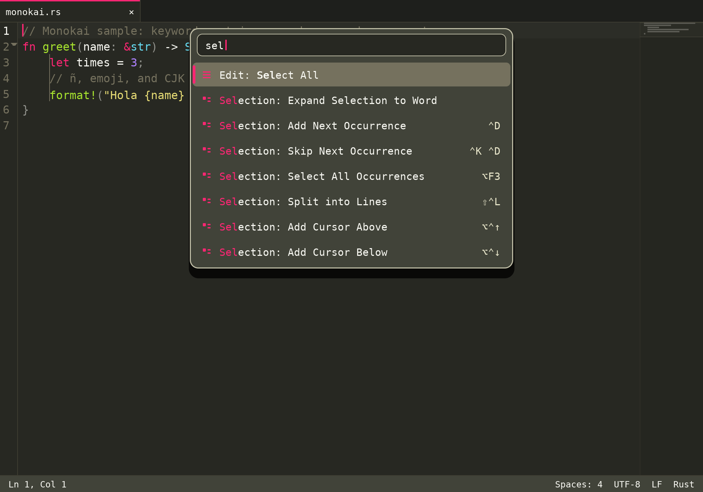
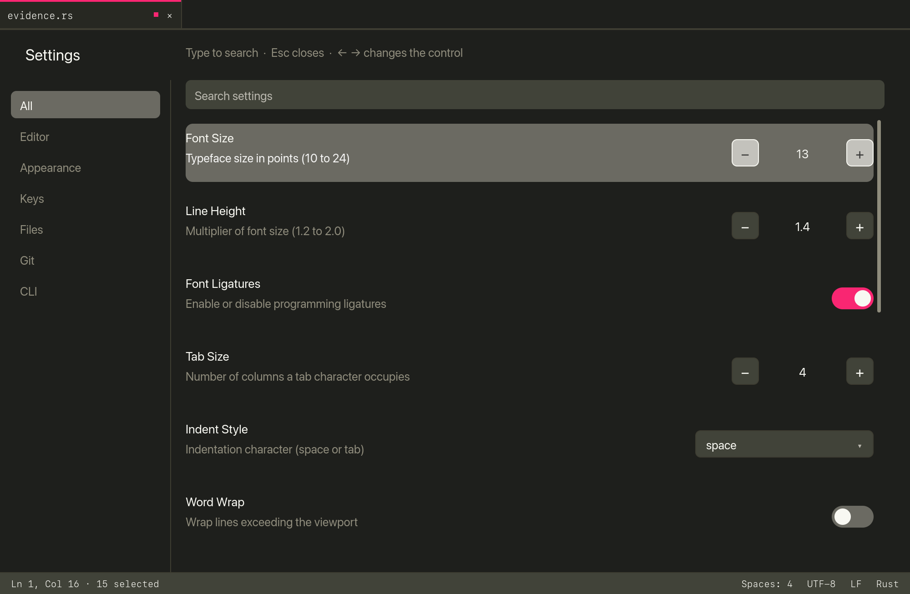
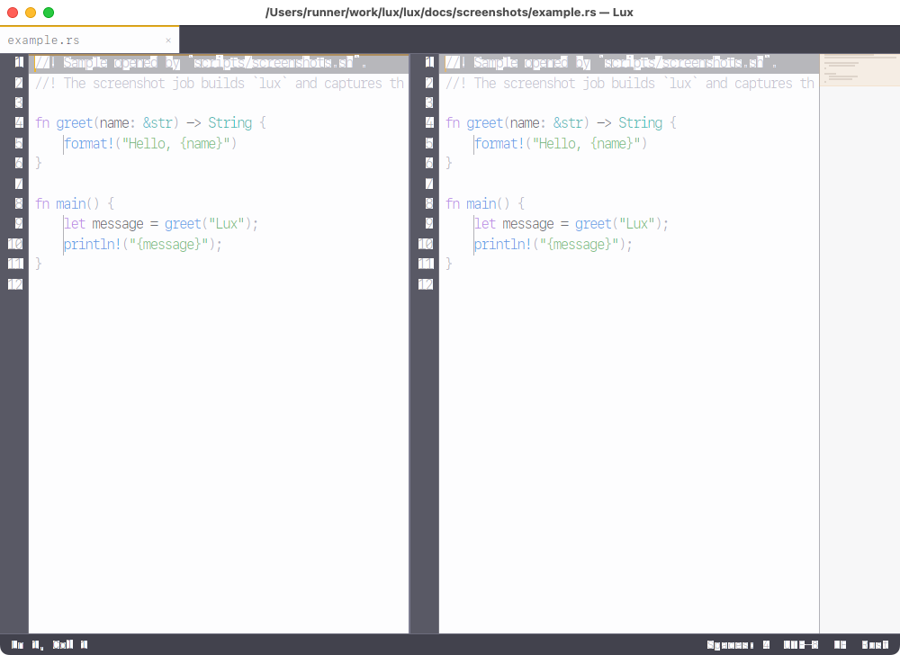

Sublime Text speed and muscle memory. Modern Rust safety and intelligence. Hardware-accelerated with WGPU, sub-8ms typing latency, Tree-sitter incremental syntax, and zero cloud bloat.



No Electron. No Chromium runtime. No forced telemetry or invasive AI bots. Just raw Rust performance tuned to human reaction limits.
New in v1.5.5: Settings is an opaque page between the tab bar and the status bar. Toggles, steppers, and menus change the real settings. The wheel scrolls the page.
Complete fidelity with classic keymaps: Cmd+D multi-cursor selection,
Cmd+K, Cmd+D skip occurrence, column/rectangular editing (Option+Drag),
and parallel multi-caret clipboards.
New in v1.1.0: Independent PaneView pipelines supporting 2-4 columns, rows,
2x2 grids, interactive 60/120Hz draggable dividers with 50/50 reset, and live cloned buffer views.
Direct GPU vertex-cached glyph rendering using modern WGPU primitives. Native 120Hz ProMotion support on Apple Silicon with 2–4ms key-to-pixel latency.
Zero UI freezes during typing. Non-blocking background parsing coupled with an instant $O(K)$ token shifting algorithm guarantees 120 FPS frame stability on massive files.
Integrated gix Git engine with zero shell-out lag. Gutter diff markers,
floating 3-way merge resolution, and a built-in pseudo-terminal (PTY) with ANSI 24-bit truecolor.
Strictly zero telemetry, zero analytics, zero external network calls, and zero integrated LLM bloat. Plugins execute inside sandboxed WebAssembly Component Model containers.
The picture is the live window after the two-column layout command. Lux keeps an independent viewport in each pane:
Ctrl+1..4, move documents across groups with Ctrl+Shift+1..4, or divide layout with Cmd+Option+1..5.

Benchmarked on Apple Silicon (M-Series) under real workloads against standard desktop editors.
| Benchmark Metric | Lux (Rust) | Sublime Text 4 | VS Code (Electron) |
|---|---|---|---|
| Cold Startup Time | ~62 ms | ~120 ms | ~1,850 ms |
| Key-to-Pixel Latency | 2–4 ms | 5–8 ms | 35–65 ms |
| Memory Footprint (Idle RSS) | ~28 MB | ~45 MB | ~350 MB+ |
| Memory on 100 MB File | ~1.6× file size | ~2.1× file size | ~9–14× (or crash) |
| Rendering Engine | Native WGPU (120Hz) | Skia / OpenGL | Chromium DOM (HTML/CSS) |
| Binary Distribution Size | 12.7 MB | ~45 MB | ~380 MB |
| Background Telemetry & Cloud | 0.0% (Strictly None) | Update checks only | Continuous Telemetry |
Your fingers already know how to use Lux.
macOS is the focus. The v1.5.5 GitHub Release includes the universal
disk image lux-macos-universal.dmg, plus
lux-linux-x86_64 and lux-linux-amd64.deb.
Pull-request CI builds the same image as an artifact and does not publish it.
Windows .msi stays outside CI.
git clone https://github.com/lcajigasm/lux.git
cd lux && cargo build --release